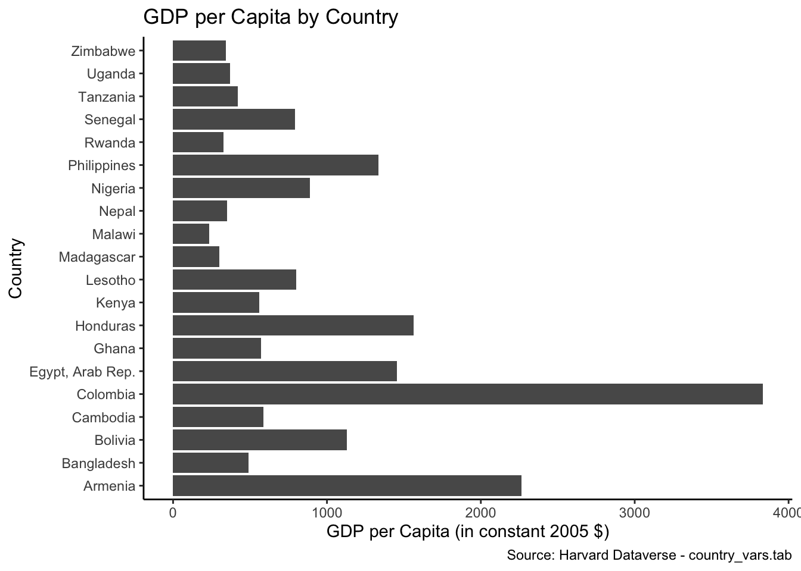
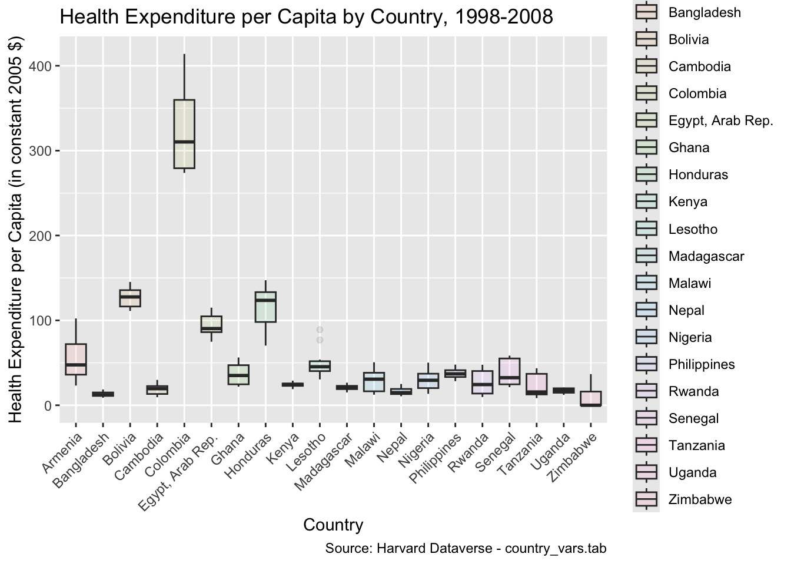
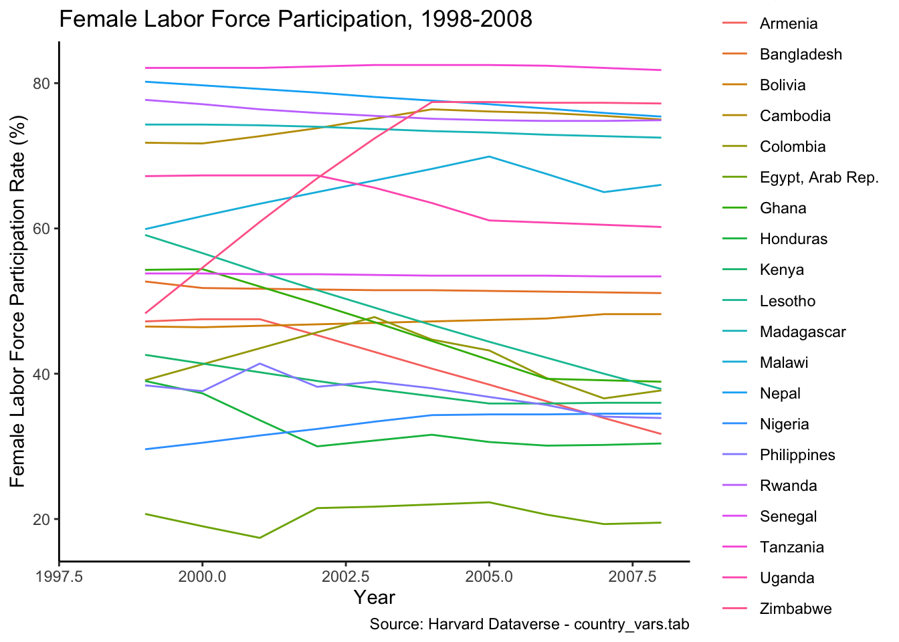

We have attempted to compare female labor force participation across selected countries, alongside the maternity leave offered, over the period from 1998 to 2008. Additionally, we examined GDP per capita and health expenditure per capita, both measured at constant 2005 dollar levels.
The horizontal bar graph below, titled “GDP per Capita by Country,” displays GDP per capita values measured in constant 2005 $ for various countries in 2008. Colombia has the highest GDP per capita at $3,832.495, while Malawi has the lowest at $235.915. Other countries like Honduras, Egypt, and Armenia also show relatively higher GDP per capita, whereas Zimbabwe, Uganda, and Madagascar have lower values.
maternityleave2 %>%filter(yearbirth==2008) %>%ggplot() +geom_col(mapping =aes(x = gdpcapita, y = country)) +labs(x="GDP per Capita (in constant 2005 $)",y="Country",title ="GDP per Capita by Country",caption ="Source: Harvard Dataverse - country_vars.tab" ) +theme_classic()

Health Expenditure per Capita by Country
The following graph illustrates the health expenditure per capita across various countries from 1998 to 2008. Countries with higher GDP per capita generally allocate more resources to public services like education and healthcare, aimed at improving citizens’ welfare. Among the countries shown, Colombia has the highest health expenditure per capita, which correlates with its status as the country with the highest GDP per capita in 2008.
maternityleave2 %>%ggplot() +geom_boxplot(mapping =aes(x=country, y=phecapita, fill = country),alpha=0.1) +theme(axis.text.x =element_text(angle =45, hjust=1)) +labs(x ="Country",y ="Health Expenditure per Capita (in constant 2005 $)",title ="Health Expenditure per Capita by Country, 1998-2008",caption ="Source: Harvard Dataverse - country_vars.tab" )
Warning: Removed 20 rows containing non-finite outside the scale range
(`stat_boxplot()`).

Female Labor Force Participation across Countries
The graph below illustrates female labor force participation rates for various countries between 1998 and 2008. From the data, we can observe that countries with higher GDP per capita, such as Colombia and Honduras, tend to have lower female labor force participation rates. Conversely, countries with lower GDP per capita, such as Tanzania and Uganda, exhibit higher female labor force participation. This trend suggests that as GDP per capita increases, women who might have worked out of necessity may choose to focus on non-labor market activities, reflecting a decline in participation rates.
ggplot(maternityleave2) +geom_line(mapping =aes(x = yearbirth, y = lfp, color = country)) +labs(x="Year",y="Female Labor Force Participation Rate (%)",title ="Female Labor Force Participation, 1998-2008",caption ="Source: Harvard Dataverse - country_vars.tab" ) +theme_classic()
Warning: Removed 20 rows containing missing values or values outside the scale range
(`geom_line()`).

Paid Maternity Leave across Countries
The following scatter plot displays the amount of paid maternity leave (in weeks) provided to women across different countries in 2008. The data shows that in most countries, maternity leave is around 12 to 13 weeks. Notable outliers include Armenia, which offers 20 weeks, and Malawi and Nigeria, where no paid maternity leave is provided. The variation in maternity leave policies across countries appears to have little impact on female labor force participation, as countries with similar maternity leave durations exhibit varying participation rates in the labor market. This suggests that other factors, such as economic conditions and cultural norms, may play a larger role in determining female labor force participation than the length of paid maternity leave alone.
ggplot(maternityleave2,filter(maternityleave, yearbirth==2008), mapping=aes(x = country, y = durw_lag3,label=durw_lag3)) +geom_point()+geom_text(size =3, vjust =-0.8)+theme(axis.text.x =element_text(angle =45, hjust=1)) +scale_y_continuous() +labs(x="Country",y="Weeks of Paid Maternity Leave",title ="Weeks of Paid Maternity Leave across Countries", caption ="Source: Harvard Dataverse - country_vars.tab" )